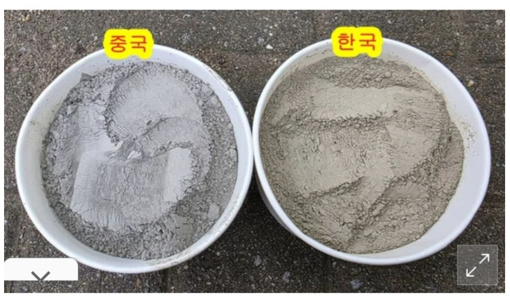
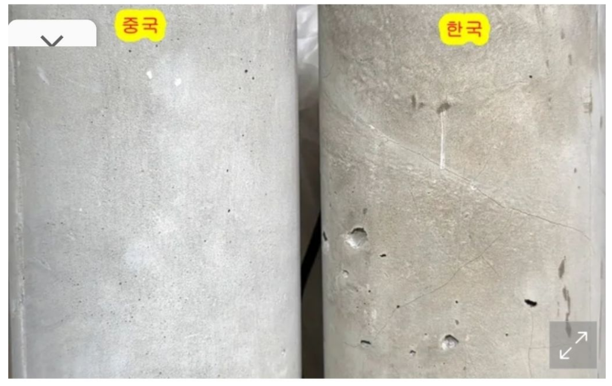
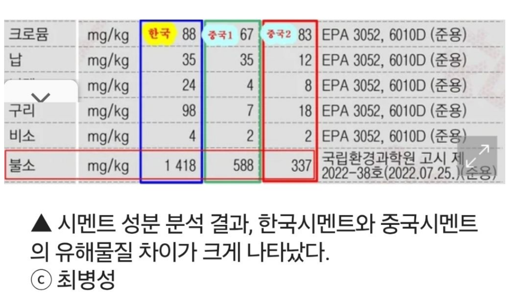
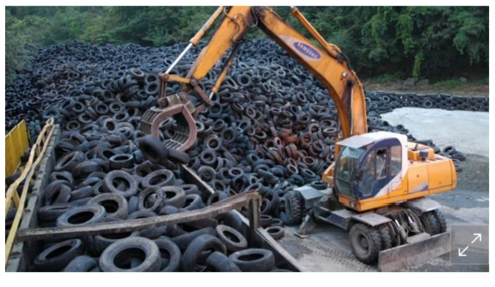
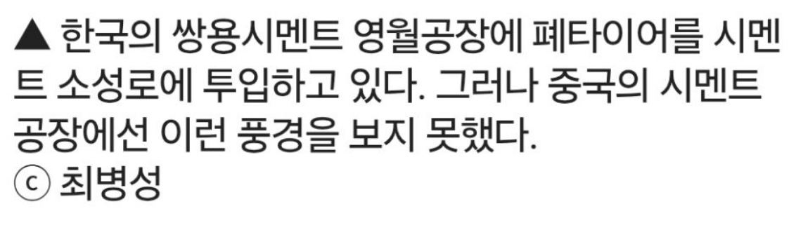

https://cafe.daum.net/subdued20club/ReHf/5720638?svc=cafeapi





중국 시멘트는 파는 곳이 없어서 지인을 통해 우편으로 받았다고 함.
https://www.ohmynews.com/NWS_Web/Series/series_premium_pg.aspx?CNTN_CD=A0003164106
https://cafe.daum.net/subdued20club/ReHf/5720638?svc=cafeapi





중국 시멘트는 파는 곳이 없어서 지인을 통해 우편으로 받았다고 함.
https://www.ohmynews.com/NWS_Web/Series/series_premium_pg.aspx?CNTN_CD=A0003164106
댓글
수집 당시 댓글 34개
시간째야근중 · 1 일 전
웃고 간다ㅋㅋ 강도가 문제가 아니라 염화물이 문제다ㅋㅋ
명동발만두 · 20 시간 전
배우신분... 퇴근하십시오.
불멸의러너 · 1 일 전
무슨무슨 법 때문에 시멘트 만들때 쓰레기 태움
데미소다복숭아 · 1 일 전
상식적으로 중국보다 우리가 규제가 빡빡하겠지
좆나단씹게이새끼 · 1 일 전
상하이는 ㅈㄴ 부자동네니까 ㅋㅋ
camelia · 1 일 전
전기바이크만 보이는거라면 아마 아예 번호판 발급이나 통행 규제때문에 그런것일껄? 중국에서 뭔가 안보인다 -> 당에서 냅다 막은거 너가 창렬화 병신화 라고 하는 것은 대부분 했다가는 "빨갱이식 규제 아니냐" 급임 한국에서 했다가는 '이렇게 정책 빨리하면 서민은 어떻게 살라고' 이런 민원 쏟아짐
일이삼사 · 1 일 전
ㅇㅇ 그건 인정함 근데 그 빨갱이식 초고강도 규제의 단맛을 여행자 입장에서 찍먹해보니 아 왜 옹호하는 사람들도 있는지는 알겠다 뭐 그런 느낌이였음 ㅋㅋㅋ 지금 생각해보니, 지구를 위한 자원순환하는게 오히려 재처리 등 비용이 좀 더 들 수 있겠네 아니면 원가가 싸지더라도 재활용하는 업체에 이득이 있어야 설득도 될테고. 내 댓글에 틀린 부분들이 있는거 같아 자삭해야겠음
camelia · 1 일 전
이 기사 환경론자가 쓴건데 그걸 그대로 믿어버리네 시멘트에 소성이나 연료비가 상당한데 이걸 석탄재나 타이어를 이용할수 있게 해서 그런거지 허용범위 안인데. https://blog.naver.com/amg_asiae/223724308333 업계말도 한번 듣어봐야지
토마스킴 · 1 일 전
커뮤니티에 중국인이 많아지는게 느껴진다
시영이 · 1 일 전
졸라 많다니까 의외로 커뮤뿐만이 아니라 게임에도 졸라 섞여있음
밀광우 · 10 분 전
역겨운중국인
바늘에서사막찾기 · 1 일 전
팩트라며 올라온 글 왠만하면 믿지 말고 한 번 찾아보는 게 좋음. 이젠 팩트도 못 믿겠다 하도 구라를 쳐서.
고드립 · 1 일 전
글쎄.. 품질검사 하고 시멘트 수입하는것도 좋을듯. 우리나라 탄광도 망하고 각종 원자재 수입하는데 시멘트는 왜 안됨?
젤상혁 · 1 일 전
중국시멘트 좋을수 있지 근데 중국에서 사오는게 진짜 시멘트라는 보장이 어딨냐고 ㅋㅋ
염소메에 · 1 일 전
첫댓 대댓 ㄱㄱ 설명 진짜 잘 해 놓음 포인트 만 긁어오면 1. 국가에서 한없이 폐기물 처리비용이 들어가니까 어느정도 "자원순환재생"이랍시고 제조과정중에 넣으라고 하는 것임. 2. 토목, 건축, 건설 관련 학과에서 일반건설재료 관련 수업이면 깔고가는 기본전공지식임.
명동발만두 · 20 시간 전
린미 · 1 일 전
국내 시멘트 업계에서는 일정 비율 폐기물을 섞는 걸로 알고 있음 폐기물 섞는 건 선진국에서는 다 하던 거라고 함 관련 영상에서 중국 업체에 폐기물 얼마나 넣는지 물어보니 그걸 왜 넣음? 하던 영상도 본 거 같음 https://www.hkbs.co.kr/news/articleView.html?idxno=801744
밤귀신 · 16 시간 전
중국이야 땅 넓으니 매립하면 끝인데 뭐하러 시멘트에다 섞겠나 이거지뭐... 마찬가지로 땅 넓으니 시멘트도 많이 나올꺼고
충주씨 · 1 일 전
폐타이어는 소성로 연료로 쓰는건데, 시멘트 품질이랑 뭔 관계여?
책임없는쾌락 · 1 일 전
중국의 달달한 젖꼭지?
그럼숏쳐 · 1 일 전
강도는 비교 안했어? 메탈 더 들어가서 튼튼한지 궁금한데
4829571 · 1 일 전
진심허공펀치 하는 별의미없는 싸움
머지 · 1 일 전
유해물질은 개뿔 질알하네 원래 대한민국이 그렇게 지어졌어 지네가 사는 곳이 유토피아인줄 아네 시멘트고 나발이고 2010년 이전에 건물들 석면 텍스, 화장실 큐비클(석면함유), 석면 석고보드써서 다 그렇게 지어졌어요~ 뭔 호들갑이야 지방한번 가서 유심히 봐라 삐까뻔쩍한 건물 뒤로 관리 안한 폐가 석면슬레이트 부서진채 그냥 나뒹굴고 있다. 누구하나 신경쓰는 사람없어
레벨토끼 · 1 일 전
제일 앞에 친구가 설명 잘해놨더라 관계자로 조금 거들면 우리나라 콘크리트들 자원순환성 이랑 저탄소 인증도 같이 받고있음 우리나라 품질관련 인증받으려면 개 빡빡하고 시험할게 한두개가 아니라 돈도 쥰내 들어가는 나라임 심지어 시험도 아무 연구소에서나 가능한것도 아님 중국제품이 우리나라 기준과 시험 통과 가능 여부도 의문인데 기사 본문은 우리나라 인증기준 준용했다고 하지만 어디서 시험했는지 명기도 안되어있음 공인기관에서 한 연구가 아닐 가능성이 크다는 이야기지 또 기사에서 사진으로 사용한 기둥의 콘크리트 표면이 고르고 안고르고는 시공 기술자 스킬의 차이지 제품의 차이라 보기 어려우며 밑의 유해물질과 전혀 관련없는 사진임 마지막으로 폐타이어는 아스팔트, 도로 중앙분리대, 놀이터나 체육시설 탄성포장, 바닥 미끄럼방지 타일 등등 니들이 밟고 다니는 시설 전반에 엄청 쓰이고 있음 전혀 걱정할 거리가 아니라는 말임
명동발만두 · 20 시간 전
게이트 · 1 일 전
제품이 엄청나게 많은데 얼마인지 보편적인지가 중요한거지 나라로 따지면 얼마든지 입맛에 맞게 선동이 가능한데. 이젠 중국 제조업이 워낙 발달하고 넘사벽이라 현재 똑같은 가격이면 중국 이길 나라가 없긴해 인건비는 동남아쪽이 더 싸다지만 기술력 때문에 너무 퀄리티 차이가 크고 만들 수 있는것도 많이 없음
MS08소대 · 1 일 전
댓글에 저능아 새기들 많네 저 사진과 글만 보고 섣불리 판단하지말고 내가 하고 싶은 말은 첫댓대댓에 누가 다 써놓음
년째짖는중 · 1 일 전
콘크리트 타설 전에 시험 다 하는데 국산이 더 구리다는건 개 헛소리임
두치 · 1 일 전
인터넷 찾아보니까 품질까지는 모르겠는데 한국정부가 폐타이억 등 불순물을 시멘트 제조공정에서 넣으라고 하고 있고, 기준을 설정하고 있고, 기준안에서는 실제 건축물에 영향이 없다/안전하다는 의견이야. 다만 그 기준이란게 정말 잘 지켜질지는 업체 도덕성문제인거고, 문제가 발생해야 나중에 원인분석해서 다시 기준을 조정하겠지?
시영이 · 1 일 전
아니 그니까 중국 별 이상한 놈들이 한국 커뮤와서 선동질 하고 분탕질 한다니까 ??? 얼마전에 해외 계정 유입 되어서 여론 조작하는 댓글 졸라 많다고 나왔잖아 이것도 그 중 하나인듯 이런건 좀 승희가 짤라야 하는거 아니냐 ?>?? 이런 게시글 때문에 계속 중국 안 좋게 보는거잖아 . 걔네들이라고 100%가 악인이겠어 ? 아니잖아 승희 운영 하는거 보면 좀 이해안가 정치글도 엄청 푸는거 같고
Cursor · 1 일 전
이렇게 선동이 쉽다
나무닆 · 21 시간 전
2011년 초 ~ 2012년 말 까지 하수 처리장에서 일했었는데, 당시 유입되는 하수처리 각 공정을 거친뒤 남은 슬러지에 물풀? 같은 액체를 넣고 탈수기에 넣고 돌리면 물기가 살짝 있는 촉촉한 거름 느낌의 슬러지가 되어서 나옴. 그걸 쌓아 놨다가 1) 바다에 뿌림 2) 소각장에서 소각 3)시멘트에 섞음 위의 3가지 방식으로 나감. 그때 궁금증이 생겼던게, Q. 새아파트 증후군은 저 시멘트에 집어 넣는 슬러지가 원인인거 아닐까? 그렇게 생각하게 된 계기가 1) 하수처리장에 들어오는 오수가 똥오줌설겆이샤워 등 생활하수만 오는게 아니라 기타 오염물질도 분명 유입되서 들어오고 있고 2) 도로 위 녹아 있는 매연 등도 비에 녹아들어 우수관을 통해 하수로 유입되는 경우 3) 가게 및 공장등에서 배출하는 오염물질등도 다 들어옴 4) 솔직히 TN/TP 측정기 100% 믿을 수가 없음(이건 자세히 말할 수가 없다) 5) 슬러지 탈수 시 넣는 그 액체. 이름은 지금은 기억 안나는데 그게 천연 성분도 아니고 결국 슬러지 탈수 후 나오는 물 역시 재이용수로 환원되는데 제거되는 것도 아니고.... 물론 아침마다 실험실에서 하수 수치 측정 때문에 물도 떠가서 실험 하고 하는데, 문제는 저 슬러지가 그 온갖 오염 물질의 농축 집약체인데 그게 실험실에서 측정하는 수치와 같을까? 하는 생각이 들었슴다.
명동발만두 · 20 시간 전
그 하수처리해서 나오는 걸 폐기물을 흔히 [오니, 슬러지] 라 일컫는데.. 1.그걸 소성하면 불순 분자는 태워져서 없어지고 유기물인 흙 같은 녀석이 남아요. 그걸 시멘트 재료인 클링커를 만들 때 사용합니다. 근데 왜 그걸 쓰느냐? 자연발생해서 희소될 수 있는 흙같은 녀석을 어차피 모아서 폐기되는 옛날 비료와 같은 원래로 생성되는 바이오 흙? 을 사용하자는 취지 입니다. 2.그리고 새집증후군의 주요 문제로 비춰지는 건 주요구조체에 들어가는 시멘트의 문제보다 내장재료(인테리어 ;도배, 가구시트지, 페인트 등등)에서 사용되는 접착제 혹은 희석제에서 생기는 가스가 농축됨에 따라 문제가 발의 되었습니다. 그래서 환경인증, 친환경 내장 인증 등등 국가에서 ksm 이나 환경표지 인증 등등으로 국토부를 비롯한 주택공사 등등 국가 기관을 비롯한 여러 공기업에서 "적당히 성능도 나오면서 실내에서 도 쓰게 만들어라 업체들아(아님 좆되는거야)" 하고 고지 내려서 그거 아니면 못쓰는 형국으로 발전 하였답니다.
번좋음 · 21 시간 전
에이 중국을 믿냐?